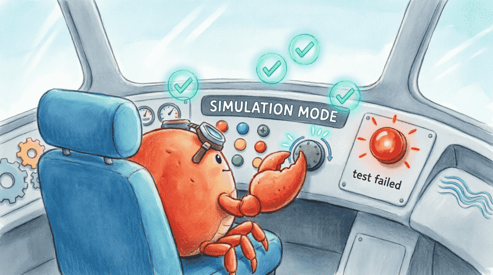
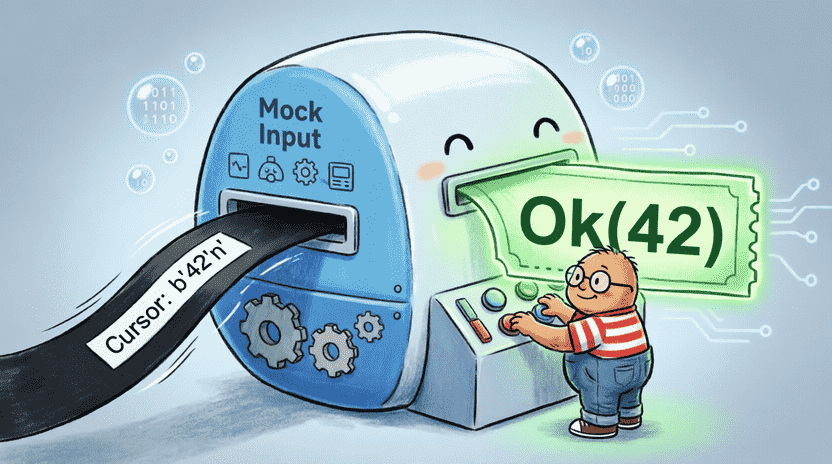
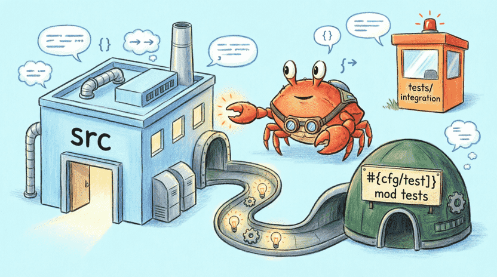
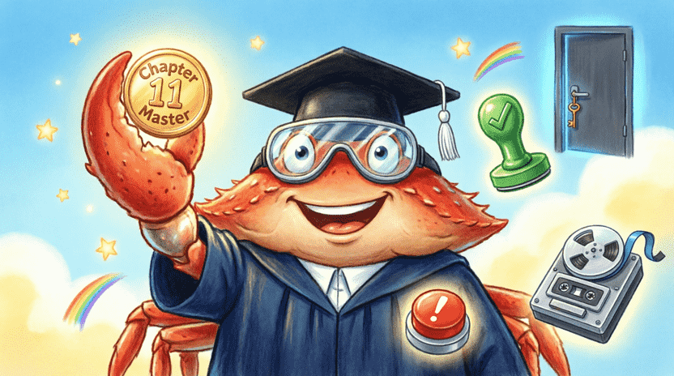

🦀 The Land of Rust: Ferris the Crab’s Space Adventures
Chapter 11: Test the Self-Destruct Button! (Writing Tests)
📋 Chapter Outline:
11.1. Before Launch: The Simulator
11.1.1. The Story: Ferris’s Flight Simulator
Before Ferris presses the real launch button on his spaceship, he tests every system in a special simulator room. 🚀🕹️ He pushes buttons, starts engines, turns the steering wheel, and checks if everything works correctly. If a red light turns on in the simulator, Ferris is actually happy! Why? Because he found a problem before the real danger and can now fix it.
In programming, we do exactly the same thing, and we call it Testing – one of the most important skills for a computer wizard to ensure the program works correctly before sharing it with others. 🧙♂️

11.1.2. What Is a Test?
A test is a small piece of code that calls a part of the main program and compares its result with what we expected.
✅ If the result matches what we wanted → the test turns green (passes) and the trust light turns on. ❌ If the result is different → the test turns red (fails) and the compiler tells us exactly where we made a mistake.
11.1.3. Your First Test with #[test]
In Rust, to turn a regular function into a test, we just add a magic label above it: #[test].
Inside the function, we use checking tools (like assert_eq!) to verify correctness:
#![allow(unused)]
fn main() {
#[test]
fn check_addition() {
assert_eq!(2 + 2, 4);
}
}This code tells the compiler: “This is a test. Please check that 2+2 really equals 4!”
11.1.4. Running Tests with cargo test
To run all tests, open your terminal inside the project folder and type:
cargo test
Cargo searches through all files, finds functions marked with #[test], and runs them one by one.
11.1.5. Reading Test Output
If everything is correct, you’ll see a nice green output:
running 1 test
test check_addition ... ok
test result: ok. 1 passed; 0 failed; 0 ignored; 0 measured; 0 filtered out
If a test fails, it shows up in red with detailed information:
failures:
---- check_addition stdout ----
thread 'check_addition' panicked at 'assertion failed: `(left == right)`
left: `5`,
right: `4`', src/lib.rs:3:5
The compiler tells you exactly: “I saw 5 on the left side, but I expected 4 on the right side!”
![[Illustration: A friendly robot quality inspector holding a rubber stamp. One stamp says “assert_eq! ✅”, the other shows a red warning symbol. Ferris stands beside a conveyor belt of code blocks waiting for inspection. Style: clean educational cartoon, bright colors, clear visual metaphor.]](assets/images/11.2.png)
👨👩👧 Note for parents and teachers
Test‑writing is one of the most valuable professional habits in programming. This chapter shows how writing tests helps us ensure code works correctly. If a child feels tired of writing tests at first, remind them that tests are like seatbelts – they might take a moment to buckle, but they save lives. The official Rust book has a complete chapter about testing:
doc.rust-lang.org/book/ch11-00-testing.html
11.2. Essential Testing Macros
11.2.1. assert!
This macro takes a condition and checks that it is definitely true. If it’s false, the test fails.
#![allow(unused)]
fn main() {
#[test]
fn test_is_positive() {
let num = 5;
assert!(num > 0); // This is true, so the test passes
}
}11.2.2. assert_eq! and assert_ne!
🔹 assert_eq!(left, right): Checks that two values are exactly equal.
🔹 assert_ne!(left, right): Checks that two values are not equal.
#![allow(unused)]
fn main() {
fn add(a: i32, b: i32) -> i32 { a + b }
#[test]
fn test_add() {
assert_eq!(add(2, 3), 5); // Should be 5
assert_ne!(add(2, 2), 10); // Should NOT be 10
}
}11.2.3. Adding Custom Messages
You can add a custom message so that if a test fails, you understand exactly what happened:
#![allow(unused)]
fn main() {
#[test]
fn test_add_with_message() {
let result = add(2, 2);
assert_eq!(result, 5, "We expected 5, but got {}.", result);
}
}11.2.4. #[should_panic]
Some functions are designed to panic in certain situations. For example, a division function should panic if the divisor is zero. To test this behavior, we use #[should_panic]:
#![allow(unused)]
fn main() {
fn divide(a: i32, b: i32) -> i32 {
if b == 0 {
panic!("Division by zero is forbidden!");
}
a / b
}
#[test]
#[should_panic(expected = "Division by zero")]
fn test_divide_by_zero() {
divide(10, 0);
}
}The expected attribute helps us make sure the panic happened for exactly the reason we anticipated.
11.2.5. Exercise: Test the add Function
Write an add function that adds two numbers. Then write three tests for it: adding two positive numbers, adding a positive and a negative number, and adding two negative numbers.
💡 Sample Answer:
#![allow(unused)]
fn main() {
fn add(a: i32, b: i32) -> i32 { a + b }
#[cfg(test)]
mod tests {
use super::*;
#[test]
fn test_add_positive() { assert_eq!(add(2, 3), 5); }
#[test]
fn test_add_mixed() { assert_eq!(add(5, -3), 2); }
#[test]
fn test_add_negative() { assert_eq!(add(-2, -3), -5); }
}
}![[Illustration: A friendly robot quality inspector holding a rubber stamp. One stamp says “assert_eq! ✅”, the other “assert_ne! ❌”. Ferris stands beside a conveyor belt of code blocks waiting for inspection. Style: clean educational cartoon, bright colors, clear visual metaphor.]](assets/images/11.3.png)
11.3. Organizing Your Tests
11.3.1. Unit Tests
Unit tests examine the smallest parts of a program (like a single function or method) in isolation. These tests are usually written in the same file as the main code.
11.3.2. The tests Module and #[cfg(test)]
To separate test code from main code (and prevent it from being compiled in the final version), we put tests inside a module called tests and write #[cfg(test)] above it:
#![allow(unused)]
fn main() {
pub fn add(a: i32, b: i32) -> i32 { a + b }
#[cfg(test)]
mod tests {
use super::*; // Bring everything from outside into this module
#[test]
fn test_add() { assert_eq!(add(2, 2), 4); }
}
}#[cfg(test)] means: “Only compile this module when I’m running tests.” It’s like a secret room that only opens during inspection! 🕵️♂️
🧠 Sometimes things are hard, and that’s okay!
Writing tests might feel a bit tedious at first, but the more you practice, the faster and more enjoyable it becomes. Even professional programmers, when they find a bug, first write a test to make sure that bug never comes back.
11.3.3. Integration Tests
These tests examine the program from an external user’s perspective. Integration tests live in a separate folder called tests/ (next to the src/ folder). Each .rs file in this folder behaves like an independent project and must use our library.
📂 Folder Structure:
my_project/
├── Cargo.toml
├── src/
│ └── lib.rs // Main code
└── tests/
└── integration_test.rs // External tests
Example tests/integration_test.rs:
#![allow(unused)]
fn main() {
use my_project::add; // Write your project name here
#[test]
fn test_add_integration() {
assert_eq!(add(2, 2), 4);
}
}11.3.4. Running Just One Test
If your project is large, you can run just one specific test:
cargo test test_add_positive
You can even type part of the name to run all similar tests: cargo test add
11.3.5. Ignoring Tests with #[ignore]
If a test takes too long or isn’t ready yet, you can temporarily disable it:
#![allow(unused)]
fn main() {
#[test]
#[ignore]
fn long_running_test() { /* Code that takes 10 minutes */ }
}To run ignored tests: cargo test -- --ignored

11.4. Project: Testing the Guess-the-Number Game (from Chapter 2)
Now it’s time to rewrite the guess-the-number game so it can be tested. (Remember? It generated a random number, took user input, and gave hints.)
11.4.1. Converting the Game to a Library
First, we create a library project so we can test its functions:
cargo new guess_game_lib --lib
cd guess_game_lib
In Cargo.toml, add the rand dependency (new version):
[dependencies]
rand = "0.9.0"
11.4.2. The generate_secret Function with Fixed Seed
In tests, we don’t want the number to be truly random (because it changes every time and we can’t predict the result). So we make a helper function just for tests that always returns a fixed number:
#![allow(unused)]
fn main() {
// src/lib.rs
use rand::Rng;
pub fn generate_secret() -> u32 {
rand::thread_rng().gen_range(1..=100)
}
#[cfg(test)]
pub fn generate_secret_fixed() -> u32 { 42 } // Always returns 42
}11.4.3. The check_guess Function
This function contains the main game logic:
#![allow(unused)]
fn main() {
#[derive(Debug, PartialEq)]
pub enum GuessResult { TooLow, TooHigh, Correct }
pub fn check_guess(guess: u32, secret: u32) -> GuessResult {
if guess < secret { GuessResult::TooLow }
else if guess > secret { GuessResult::TooHigh }
else { GuessResult::Correct }
}
}11.4.4. Writing the Tests
Now in lib.rs, under the tests module, we write our tests:
#![allow(unused)]
fn main() {
#[cfg(test)]
mod tests {
use super::*;
#[test]
fn test_check_guess_too_low() {
assert_eq!(check_guess(10, 42), GuessResult::TooLow);
}
#[test]
fn test_check_guess_correct() {
assert_eq!(check_guess(42, 42), GuessResult::Correct);
}
#[test]
fn test_generate_secret_fixed() {
assert_eq!(generate_secret_fixed(), 42);
}
}
}11.4.5. Testing read_input with Mocking
How do we test a function that reads from the keyboard? Instead of using real stdin, we write the function to accept anything that can be read from (the BufRead trait). In tests, we use Cursor, which acts like a virtual tape recorder that reads text character by character.
#![allow(unused)]
fn main() {
use std::io::{BufRead, Cursor};
pub fn read_number<R: BufRead>(reader: &mut R) -> Result<u32, String> {
let mut input = String::new();
reader.read_line(&mut input)
.map_err(|e| format!("Read error: {}", e))?;
input.trim().parse()
.map_err(|_| "Please enter a valid number".to_string())
}
}And its test:
#![allow(unused)]
fn main() {
#[cfg(test)]
mod tests {
use super::*;
#[test]
fn test_read_number_ok() {
let input = b"42\n"; // Virtual tape
let mut cursor = Cursor::new(input);
assert_eq!(read_number(&mut cursor), Ok(42));
}
#[test]
fn test_read_number_invalid() {
let input = b"hello\n";
let mut cursor = Cursor::new(input);
assert!(read_number(&mut cursor).is_err());
}
}
}
11.5. Summary & Challenge
11.5.1. What You Learned
In this chapter, you discovered:
✅ Testing is like a flight simulator: We test everything before real use.
✅ #[test] turns a function into a test, and cargo test runs them.
✅ assert!, assert_eq!, and assert_ne! are used to verify correctness.
✅ #[should_panic] tests functions that are supposed to panic intentionally.
✅ Unit tests live in #[cfg(test)] modules; integration tests live in the tests/ folder.
✅ For testing input, we use BufRead and Cursor to avoid needing real typing.
✅ Test‑writing turns you into a real software engineer – someone who finds problems before users experience them. 🧙
11.5.2. Challenge: Tests for the Monster Struct
Return to the Monster struct from Chapter 5. Add an attack method that attacks another monster and reduces its power. Then write three tests:
- An attack that reduces the victim’s power.
- An attack with zero power (should not reduce anything).
- Checking that the returned damage value is correct.
💡 Sample Answer:
#![allow(unused)]
fn main() {
struct Monster { name: String, power: u32 }
impl Monster {
fn attack(&self, other: &mut Monster) -> u32 {
let damage = self.power;
other.power = other.power.saturating_sub(damage);
damage
}
}
#[cfg(test)]
mod monster_tests {
use super::*;
#[test]
fn test_attack_reduces_power() {
let mut victim = Monster { name: String::from("Weak"), power: 100 };
let attacker = Monster { name: String::from("Strong"), power: 30 };
attacker.attack(&mut victim);
assert_eq!(victim.power, 70);
}
#[test]
fn test_attack_with_zero_power() {
let mut victim = Monster { name: String::from("Strong"), power: 100 };
let attacker = Monster { name: String::from("Harmless"), power: 0 };
attacker.attack(&mut victim);
assert_eq!(victim.power, 100); // Should stay 100
}
#[test]
fn test_attack_returns_damage() {
let mut victim = Monster { name: String::from("Victim"), power: 50 };
let attacker = Monster { name: String::from("Attacker"), power: 20 };
let damage = attacker.attack(&mut victim);
assert_eq!(damage, 20);
}
}
}Now you know how to write tests to ensure your program works correctly and add new changes with confidence. 🛡️✨
In the next chapter, we’ll build a complete, professional command-line project (similar to the grep command) and put together everything we’ve learned so far! 🔍📜
